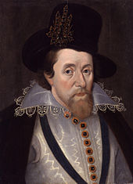

Witchhunt
in Great Britain
- First records of punishments for sorcery in ancient egypt and babylonya
- Pope Innocent III. laid the foundation for the inquisition
- Pope Innocent VIII. denounced witchcraft as heresy 1484 with the "Summis desiderantes affectibus"
- From 1450 to 1750 the majority of witchhunts in the western world took place
- The most prominent examples are the salem witch trials and the spanish inquisition
- Soon after witch huntings began to cease step by step and people began to deal scientifically with the topic
Indicators
- old women
- red hair
- crone-like
- snaggle-toothed
- sunken cheeked
- hairy lip
- having a cat
General reasons for accusations
You were...
- caught in the act of practicing witchcraft
- a sorcerer/healer who lost their clients or the authorities trust
- disliked in the neighbourhood
- considered a witch by a lot of people
King James´s obssesion with witches

- King James believed that the death of his mother was foretold by witches
- blamed witches for personal near-death experience
- performed shortly after the gunpowder plot -> fear that witchcraft is a conspiracy against the state
- witches as cause for bad events
- *1620, +1647
- Witchhunter
- Published "The discovery of witches" in 1647
- Used methods such as sleep-deprivation, devil-marks, swimming-test
- Responsible for over 300 executions
- 1450-1750: ca 5000 witch trials -> 1500-2000 executions
- 1597: "Daemonologie" published by King James
- 1612: The Pendle Witches
- 1684: Execution of Alice Molland
- 1727: Execution of Janet Horne
- 1736: Witch hunting still went on despite many acts against witchcraft were repealed